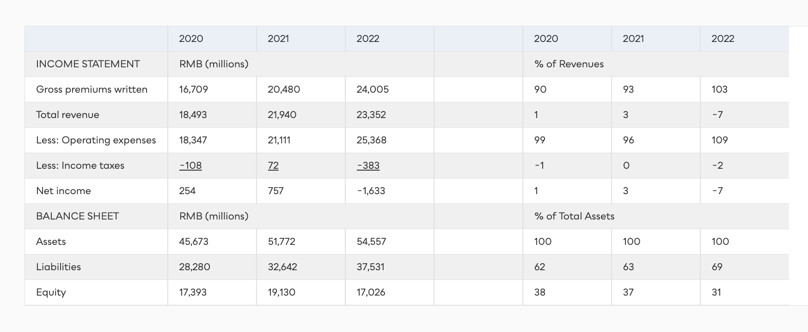

A $2 trillion industry — and ~40% of bank revenues.
McKinsey put global payments revenues at $1.9 trillion in 2020, forecast to reach $2.5 trillion by 2025. About half is in Asia Pacific, a quarter in North America. More $1B+ fintech unicorns have been born in payments than in any other line of financial services.

Many players, two steps: authorize, then settle.
Banks are everywhere — but so are non-bank money service businesses (MSBs) like Western Union, PayPal, Square, and Stripe. Authorization takes 1–2 seconds; settlement up to two business days.

A $6 trillion industry — in gross written premiums.
Premiums totaled US$5.7 trillion in 2020, growing ~4% a year since 2010 but slowing. The best opportunities are in emerging markets — Asia Pacific, Latin America, Africa. Insurers price risk, collect premiums, and pay claims.

Hot capital, brutal attrition.
Slow until 2015, insurtech then took off — ~$50B raised from 2018–2022, $17.8B in 2021 alone, 44 unicorns tracked. Yet of 760 funded insurtechs, a quarter had shut by end-2019 — mostly for lack of market appetite, not bad tech.

Where insurtechs attack the chain.
Technology alone is no moat — it can be replicated, licensed, or acquired. The industry “does not need hundreds of insurtechs that do the same thing, worse.” Disruptors must win a specific step of the chain.

Capital-light, cloud-native — and struggling.
IPO’d in Hong Kong in 2017 at HKD 59.70; backed by Alibaba (16%), Tencent (12%), and Ping An (12%). Runs entirely on its Wujieshan cloud platform; over half of 1,700 staff are engineers.
